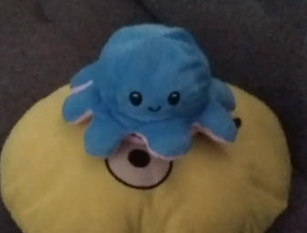

tecblu-blog is a website mainly for experimenting and testing HTML, CSS, JavaScript codes that I write and etc.
The reason why I made this website is for school projects. And also for other personal projects of mine.
So uhhh yeah.. that's pretty much what I have to say.
My life on Friday,
When I woke up, the first thing I do is pray and read the Bible. It is important to communicate with God everyday and have a good personal relationship with him.
Next thing I do is fix my bed, clean the house, and eat breakfast :) . After those things are done, I either read a book or use my laptop most of the time I use my laptop for gaming, drawing, and much more
But when Iam not in the mood to use my laptop, I jsut read a book. I have alot of books here in my house so yeah I like reading also.
After like a few hours, I eat Lunch ( btw I was aloways the one who weashes the dishes, I like to help my Mom )
I take a shower after that then go back to things I do a few hour's ago.
Then after more hours of doing hobbies yuh, I eat dinner again. I brush my teetch then sleep at 8:30 pm
The Apocalypse Girl
In a world of shadows, where undead souls reside, A little girl, fearless, in darkness did stride. With courage as her armor, she faced the undead horde, Her spirit unyielding, her heart firmly stored.
Through desolate streets, where fear gripped tight, She stood, unbroken, in the dead of night. Her steps were silent, her gaze steadfast and clear, No fear in her eyes, no hint of a tear.
Zombies lurked in corners, in alleys, they crept, But the girl, unwavering, her vigilance, she kept. With nimble feet and a mind sharp and keen, She outwitted, outlasted, in this nightmarish scene.
Her weapon, not steel, nor a gun, nor blade, But her wit and her wisdom, her courage arrayed. She danced amidst danger, her spirit aglow, Each victory she claimed, a triumph to show.
No matter the odds, no matter the fright, The girl never faltered, she battled through night. Surviving each onslaught, she stood tall, unbowed, A beacon of hope in a world disavowed.
For her tale echoes loudly, a lesson profound, That strength lies within, in hearts that resound. Against all odds, she continued to strive, The girl who fought zombies and emerged alive.